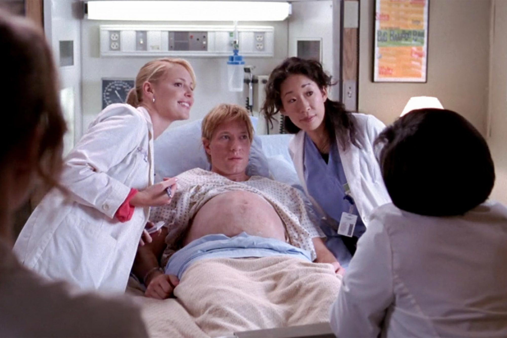

O objetivo desse projeto é apresentar uma solução de acesso à educação
através da tecnologia.
A solução apresentada é o aprendizado com base em preferências, em que o
estudante escolhe qual assunto irá explorar por meio das suas
plataformas de streaming favoritas.
Vejam algumas referencias do assunto:
O Brasil está entre os cinco maiores mercados de ‘video on demand’ no
mundo inteiro.
(Forbes Money, março 2021)
98% dos usuários de internet consomem algum tipo de conteúdo via
streaming de áudio ou vídeo.
(Kantar IBOPE Media, novembro 2020)
Vamos expandir o conhecimento a partir de escolhas satisfatórias para o estudante.
A ideia aqui é que na cena da nossa série/filme favorito tenha focos de aprendizado nos mais diversos assuntos.
Já pensou em assistir Grey's Anatomy e ter noções reais de Biologia ou Segurança do Trabalho? É bem possível!

Gamificação
E para tornar ainda mais dinâmico e atrativo o aprendizado usaremos
sistema de gamificação, em que a partir de níveis de camada e tempo de
consumo de aprendizado o estudante irá ganhando experiência.
Comunicação
Por fim teremos um espaço dedicado a troca de experiências, comentários,
elogios e sugestões de melhorias dentro do próprio site.